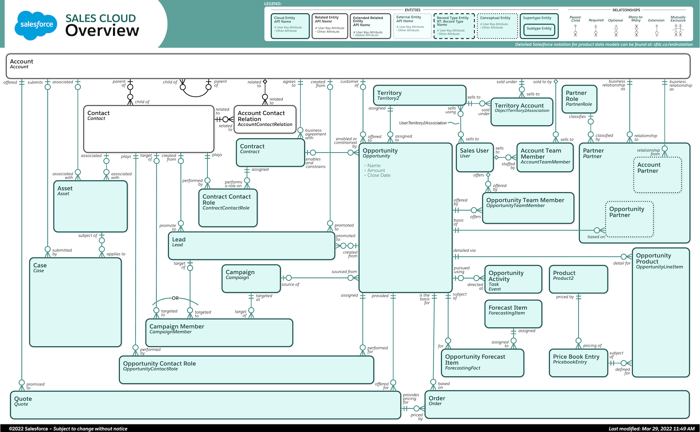
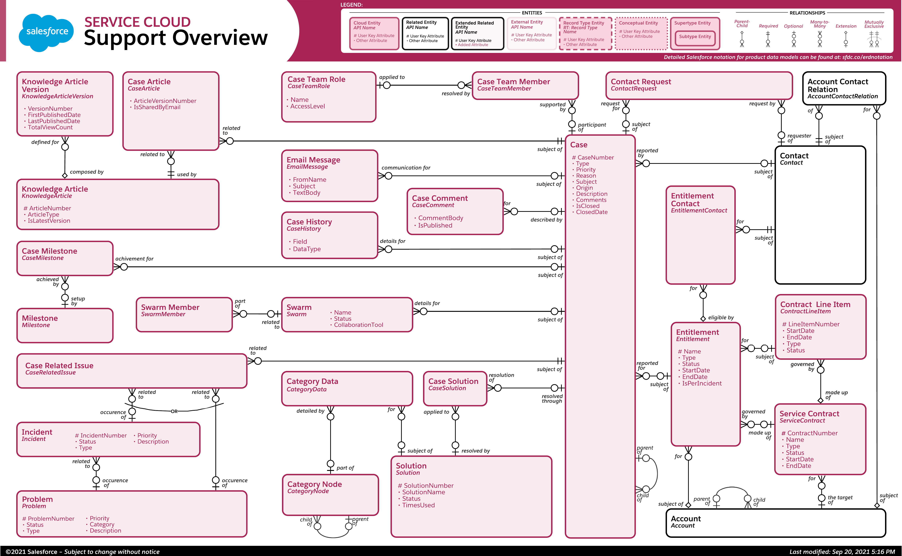
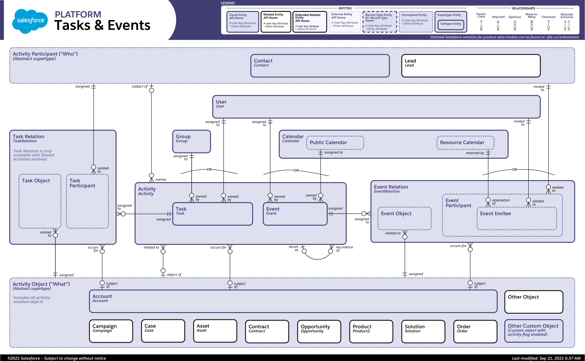
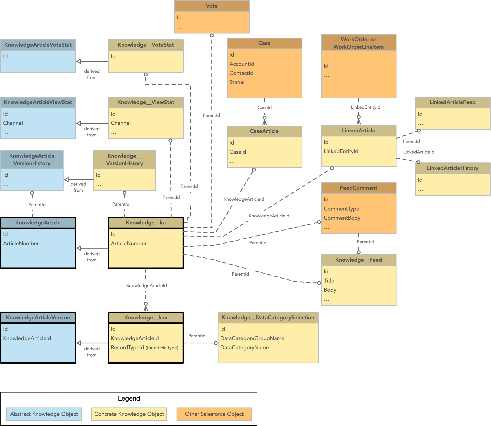
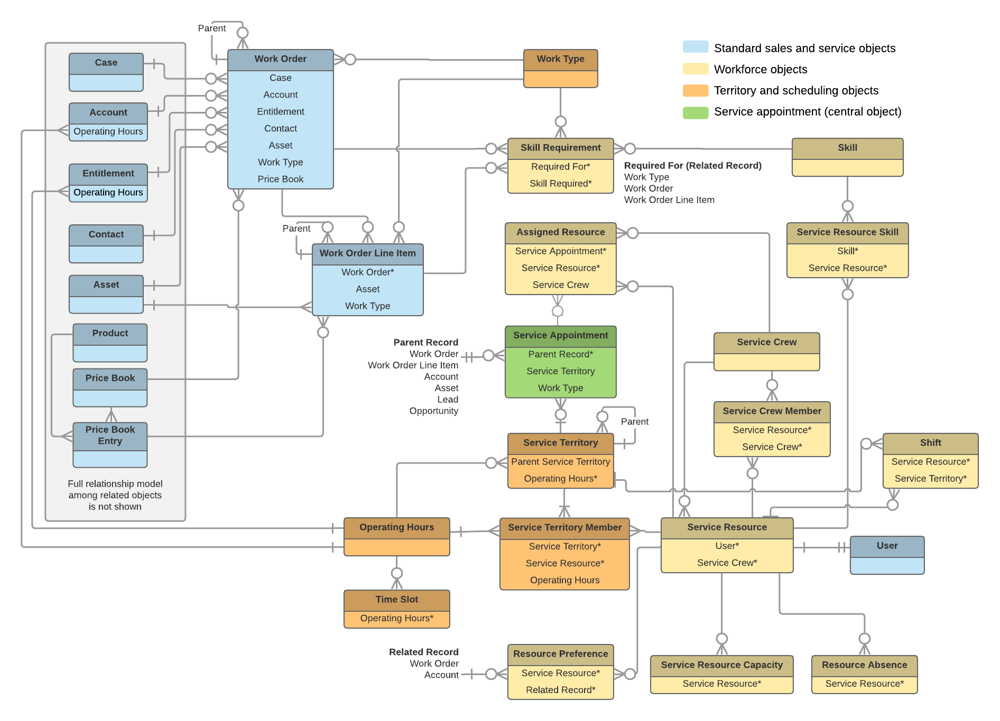
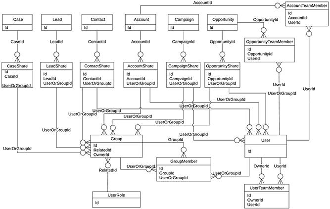
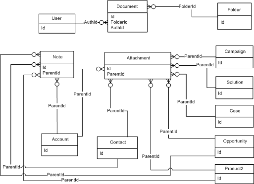
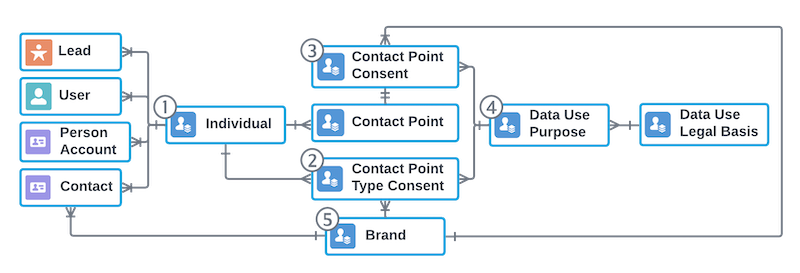

Hub for data-model design. In a CTA scenario you draw a data model diagram (key objects, relationships, cardinality, volumes) and justify each choice against sharing, volume (LDV), reporting, and licensing. The fastest way to get fluent is to know Salesforce’s official ERDs for the core clouds — this note walks through each one and pulls out what matters for a board answer.
Exam framing
Every relationship and record-type decision has a side effect on security or performance. State the decision, then the consequence: “Master-detail → child inherits sharing from parent”, or “Lookup → child needs its own OWD.”
Topics
- Reading the Official ERDs
- Sales Cloud
- Service Cloud
- Activities (Tasks & Events)
- Knowledge
- Field Service & Work Orders
- Sharing & Team Selling
- Notes, Attachments & Documents
- Consent & Privacy
- Design Decisions
- External Data
- Design Checklist
Reading the Official ERDs
Salesforce publishes product ERDs with a common notation. Each diagram’s legend points to the full notation guide at sfdc.co/erdnotation.
| Legend element | Meaning |
|---|---|
| Cloud entity (tinted box, API name in italics) | An object owned by that product’s data model |
| Related entity (white/black border) | Object from another area shown for context (e.g. Account, Contact on the Service ERD) |
| Extended related entity | Related object with additional attributes shown |
| External entity | Object outside Salesforce |
| Record type entity (dashed border) | A record type of an object, not a separate object |
| Conceptual entity (dotted) | A grouping idea, not a real object |
| Supertype / subtype | Abstract group with concrete members (e.g. Activity → Task, Event) |
| Relationship lines | Parent-child, required, optional, many-to-many, extension, mutually exclusive (“OR”) |
Official ERDs are published in the Data Model Gallery; the notation is explained in Salesforce Data Model Notation.
ERDs are dated
The ERDs below carry “subject to change without notice” and last-modified stamps of 2021–2022. Use them to learn structure; confirm object and field names in the Object Reference before putting them on a board diagram.
Sales Cloud

Source: Sales Overview Data Model (Salesforce Data Model Gallery).
What to take from it:
- Account is the hub. Contacts, Opportunities, Cases, Assets, Contracts, Quotes, and Orders all hang off it.
- Account hierarchy: Account has a self-relationship (parent / child) — use for corporate hierarchies; watch hierarchy depth and account skew.
- Contact ↔ Account many-to-many: Account Contact Relation (
AccountContactRelation) lets one Contact relate to several Accounts, in addition to the Contact’s primary Account. - Contact roles are junction objects: Opportunity Contact Role, Contract Contact Role — and Campaign Member, which targets a Contact or a Lead (mutually exclusive).
- Lead conversion: a Lead is promoted to Account, Contact, and Opportunity — it’s not a long-lived parent.
- Opportunity detail: Opportunity → Opportunity Product (
OpportunityLineItem) → Price Book Entry → Product (Product2). Quote and Order are priced from the same price book entries. - Teams: Account Team Member and Opportunity Team Member link the record to Users (see Sharing & Team Selling).
- Territory management:
Territory2withObjectTerritory2Association(Account ↔ Territory) andUserTerritory2Association(User ↔ Territory). - Partners: Partner and Partner Role relate Accounts to Opportunities.
- Forecasting: Forecast Item / Opportunity Forecast Item hang off Opportunity.
Deeper diagrams for pricing, forecasting, and territories are embedded in sales-cloud:
Board takeaway
If a scenario needs many-to-many between customers and contacts (e.g. shared contacts across subsidiaries), name Account Contact Relation rather than a custom junction. Pair with standard-object-oddities: Account Contact Relation cannot be used in a lookup field and is part of community sharing-set design.
Service Cloud

Source: Support Overview Data Model (Salesforce Data Model Gallery).
What to take from it:
- Case is the hub. It is reported by a Contact (and the Account via the Contact), and is the subject of many child objects.
- Child objects of Case: Case Comment, Email Message, Case History, Case Milestone, Case Team Member (with Case Team Role), Case Article, Case Solution, Case Related Issue, Swarm / Swarm Member, Contact Request.
- Entitlements and SLAs: Service Contract → Contract Line Item → Entitlement → (Entitlement Contact) → Case. Entitlements belong to an Account; Milestones attach to Cases through Case Milestone.
- Incident / Problem: a Case relates to an Incident or a Problem through Case Related Issue (mutually exclusive in the diagram).
- Knowledge links: Case Article joins a Case to a Knowledge Article; Case Solution links to the legacy Solution object. Both Solution and Knowledge use Category Data / Category Node (data categories).
- Account Contact Relation appears here too — it’s the same junction as on the Sales ERD.
Design consequences:
| Observation | Consequence |
|---|---|
| Case has many high-volume children (Email Message, Case Comment, Case History) | Plan for storage and LDV — Email Messages count toward data storage (calculating-data-storage) |
| Case Team Member / Case Team Role | Team-based sharing for Cases — see 04-sharing-rules |
| Entitlement → Case | Entitlement objects don’t support quick actions (standard-object-oddities) |
| Cases can be queue-owned | Standard queue-ownable object (standard-object-oddities) |
Capability context: service-cloud.
Activities (Tasks & Events)

Source: Tasks & Events Data Model (Salesforce Data Model Gallery).
What to take from it:
- Activity is an abstract supertype with two concrete members: Task and Event.
- Activities use polymorphic relationships:
- “Who” (Activity Participant): Contact or Lead.
- “What” (Activity Object): Account, Campaign, Case, Asset, Contract, Opportunity, Product, Solution, Order, or any custom object with the activity flag enabled.
- Shared Activities:
TaskRelationandEventRelation(many “Who” per activity, invitees). The diagram notes TaskRelation is only available with Shared Activities enabled. - Events can be invited to Users and Leads, and relate to Public or Resource Calendars.
- Activities have a recurrence self-relationship (recurring series).
Design consequences:
- Polymorphic
WhoId/WhatIdmake reporting and SOQL harder — joins need type filters. - Activities are the classic LDV table (Task/Event volume grows fast) and a frequent skew source: millions of tasks under one Account.
- Controlled-by-parent behaviour for Activity: see standard-object-oddities.
Knowledge

What to take from it:
- Abstract vs concrete objects:
KnowledgeArticle/KnowledgeArticleVersionare the abstract objects; the org’s actual objects areKnowledge__ka(article) andKnowledge__kav(version), derived from them. The same pattern applies to ViewStat, VoteStat, and VersionHistory. - Article types in Lightning Knowledge are record types —
Knowledge__kavcarriesRecordTypeId“for article type”. - Data categories:
Knowledge__DataCategorySelectionlinks versions to category group/name (drives visibility). - Linking to work:
CaseArticlelinks a Case to an article;LinkedArticlelinks Work Orders / Work Order Line Items to an article (plus LinkedArticleFeed / History). - Engagement:
Knowledge__ViewStat,Knowledge__VoteStat,Vote, andKnowledge__Feed/FeedComment.
Capability context: knowledge-articles.
Field Service & Work Orders

Current official version: Field Service Core Data Model (Salesforce Data Model Gallery); the image above is an older diagram.
The diagram groups objects by colour: standard sales/service objects, workforce objects, territory & scheduling objects, and Service Appointment (the central object).
What to take from it:
- Work Order relates to Case, Account, Entitlement, Contact, Asset, Work Type, and Price Book. It has a self-relationship (parent work order).
- Work Order Line Item is a child of Work Order (also self-related), carrying Asset, Work Type, and price book entry details.
- Service Appointment is the central scheduling object. Its parent record can be a Work Order, Work Order Line Item, Account, Asset, Lead, or Opportunity.
- Service Territory (with parent territory) groups resources; Service Territory Member joins Territory ↔ Service Resource and carries Operating Hours.
- Service Resource ↔ User; resources have Skills (Service Resource Skill ↔ Skill), Capacity, Absences, and Preferences.
- Skill Requirement can be set on Work Type, Work Order, or Work Order Line Item — scheduling matches requirements to resource skills.
- Assigned Resource is the junction between Service Appointment and Service Resource (or Service Crew); Service Crew / Crew Member model teams.
- Operating Hours → Time Slots; Shift ties resources to territories.
Design consequences:
- Work Orders and Line Items are on the standard-object CRUD exception list (standard-object-oddities).
- A scenario asking for dispatch/scheduling is a justification point for Field Service vs custom — see work-orders-without-fsl.
Sharing & Team Selling

What to take from it:
- Every sharing-enabled object has a
<Object>Sharetable (CaseShare, LeadShare, ContactShare, AccountShare, CampaignShare, OpportunityShare). Each share row grants access to aUserOrGroupId— either a User or a Group. - Group has
RelatedIdpointing to UserRole — this is how role and role-and-subordinates groups exist as groups. - GroupMember joins Groups to Users or other Groups (nested groups).
- Team tables: AccountTeamMember, OpportunityTeamMember, and UserTeamMember (default team:
OwnerIdhasUserIdmembers).
Design consequences:
- Share tables grow with sharing complexity — a large driver of sharing-recalculation cost and LDV problems (Sharing & LDV, 22-sharing-recalculation).
- Objects without a share table (e.g. Price Book, Product) can’t use sharing rules — see standard-object-oddities.
- Implicit and team sharing behaviours: 09-implicit-sharing, 04-sharing-rules.
About this diagram
It is a simplified, plain-notation ERD (not the standard Salesforce ERD style). Treat it as a mental model of the sharing tables, not a complete schema.
Notes, Attachments & Documents

What to take from it:
- Note and Attachment both use a polymorphic
ParentIdto point at Account, Contact, Opportunity, Case, Campaign, Solution, Product, and others. - Document sits in a Folder and has an
AuthIdto a User (legacy Documents tab).
Legacy objects
This ERD shows the legacy Notes/Attachments/Documents objects. New designs use Files (ContentDocument / ContentVersion / ContentDocumentLink) and Enhanced Notes. File storage and external storage options: document-management-systems, file-solution. Migrating legacy attachments to Files: see data-migration.
Consent & Privacy

Current official version: Privacy Consent Data Model (Salesforce Data Model Gallery); it is broader than the simplified diagram above.
What to take from it:
- Individual is the hub. Lead, User, Person Account, and Contact each relate to an Individual record (the privacy profile for that person).
- Contact Point Consent and Contact Point Type Consent record consent by channel/type, linked to the Individual and a Contact Point.
- Data Use Purpose and Data Use Legal Basis capture why data is processed and the legal basis.
- Brand relates to the consent objects so consent can be tracked per brand. The diagram numbers five objects (Individual, Contact Point Type Consent, Contact Point Consent, Data Use Purpose, Brand) 1–5.
- Privacy and consent objects take zero storage — see standard-object-oddities.
Capability context: privacy-and-consent-management.
Design Decisions
Relationship Types
| Option | Pros | Cons | When to use |
|---|---|---|---|
| Lookup | Loose coupling; child keeps its own owner, OWD, and sharing; parent optional | No native roll-ups; no cascade delete by default | Independent entities that reference each other |
| Master-detail | Child inherits sharing and owner from parent; cascade delete; native roll-up summary | Child has no owner or own OWD; parent required; max 2 per object | Tight parent-child (line items); when you need roll-ups |
| Junction object (two master-details) | Many-to-many; roll-ups on both parents | Inherits sharing from both parents; junction skew at volume | Many-to-many (see Campaign Member, Opportunity Contact Role in the Sales ERD) |
| Self-lookup / hierarchy | Parent-child within one object | Depth and reporting limits | Account hierarchy, Service Territory hierarchy |
| Polymorphic lookup | One field → several object types (WhoId, WhatId, ParentId) | Harder to report and query | Activities, notes, attachments |
- Lookup → master-detail requires every child to already have a parent; master-detail → lookup requires removing roll-up summary fields first.
- Standard objects can’t be the detail side of a custom parent; custom objects can be the detail side of a standard parent.
- Hard limits that change designs — max 2 master-detail / 40 relationships per custom object, 3 custom detail levels, no master-detail on a populated custom object, cascade delete bypassing sharing, the 100,000-record lookup delete restriction, report-join limits: see data-model-constraints-and-limits.
- Junctions and huge fan-out are data skew candidates — Junction Object Skew, account skew.
Rule of thumb
Start with lookup. Choose master-detail only for sharing inheritance, cascade delete, or roll-ups when the child never exists without the parent.
Record Types
- Control which page layouts, picklist values, and business processes (Opportunity sales process, Case support process, Lead process) a user sees; assigned via profiles / permission sets.
- They do not affect record access.
- On the Knowledge ERD they also define article types (
Knowledge__kav.RecordTypeId).
| Option | Pros | Cons | When to use |
|---|---|---|---|
| Record types on one object | One object, shared reporting and sharing model | Admin overhead per type; same OWD and field set for all | Variations of one entity (B2B vs B2C Account) |
| Separate objects | Different fields, sharing, lifecycle; clean security boundary | Duplicate config; cross-object reporting is harder | Genuinely different entities or very different volumes/sharing |
| Dynamic Forms | Show/hide fields without extra record types | Not available on every object (standard-object-oddities) | Layout variation only |
Ownership & OWD
- Every record has one owner (except master-detail children); only certain standard objects can be queue-owned — Asset, Account, Contact, Campaign, and Contract can’t; Case, Lead, Order, Task, and Work Order can (Ownership & Queues, standard-object-oddities).
- OWD is set per object; special cases and “Controlled by Parent” are in Sharing Model Fields.
- Many records under one owner or parent → skew and 23-data-skew. Design so sharing is expressible with roles + OWD, not thousands of criteria-based rules (Sharing & LDV).
Standard vs Custom Objects
- Prefer standard objects when they fit — features, reporting, and integrations come free.
- Standard-object quirks (no quick actions, no CRUD toggles, zero storage, no lookups, special team sharing): standard-object-oddities.
- Storage: calculating-data-storage. Licensing: licenses-guide.
Person Accounts
- Combine Account and Contact into one record for B2C.
- Enabling is permanent — decide deliberately.
- Affects storage (a person account is both an Account and a Contact record), sharing, and Experience Cloud design; check ISV package compatibility first.
- The Consent ERD shows Person Account as an Individual-linked entity. Related: customer-identity-and-headless-identity.
Packages & Industry Solutions to Consider
Justify each choice in the Q&A, even if you don’t pick it:
- CPQ — products, quotes, pricing rules
- Lightning Scheduler — appointment scheduling
- Field Service (formerly Field Service Lightning) — dispatch, work orders, mobile (see ERD above)
- Financial Services Cloud (optional)
External Data
When data shouldn’t be copied into Salesforce (volume, cost, system of record elsewhere), use external objects via Salesforce Connect.
| Topic | Summary |
|---|---|
External objects (__x) | Map external tables to Salesforce objects; no Salesforce storage |
| External lookup | Child standard/custom → parent external object |
| Indirect lookup | Child external → parent standard/custom, matched via External ID |
| OData adapter / Custom Apex adapter | OData when the source exposes it; Apex adapter otherwise |
Detail: 32-salesforce-connect. For archived data exposed this way: data-archiving-and-backup.
Design Checklist
- Key objects, relationships, and cardinalities on one diagram (start from the relevant official ERD)
- Master-detail vs lookup justified per relationship (sharing, roll-ups, deletion)
- Polymorphic and junction objects flagged for reporting and skew risk
- Record types vs separate objects decided
- OWD and ownership model per object
- Record volumes per object; LDV and skew risks flagged
- External data / archive objects marked
- System of record identified for shared entities (data-quality-and-mdm)
- Person Accounts decision explicit
Related Notes
- data-model-constraints-and-limits — ownership/queue support, relationship, delete, and reporting limits that affect solution choice
- standard-object-oddities — standard-object exceptions
- sales-cloud, service-cloud, knowledge-articles, work-orders-without-fsl — capability notes for each ERD
- data-quality-and-mdm — duplicates, system of record
- ldv — skew, indexes, volume
- calculating-data-storage — storage sizing
- 32-salesforce-connect — external objects
- data-migration — loading the target schema
Org-validated build
Person Accounts — validated 2026-09-30, API v66.0